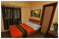

Baguio
Where to stay
Baguio has many attractions to fascinate and impress the tourists around the globe. There are luxury and affordable Hotels in Baguio City or even fully-furnished transient houses available for short-term or long-term accommodation. Making reservations and tour packages are so easy that tourists would want to visit the place over and over again and now that bookings were made even better through the use of an online reservation system.
Find Landmarks
Baguio City is one such mountain getaway high in the Cordillera Mountain Ranges where tourists can enjoy holidays with unlimited fun and add remarkable memories to the life
Find Adventure
Baguio City is definitely the most northern coast that Philippines have and a very popular one due to its spectacular climate which is another great thing for sports enthusiasts..
Find Nightlife
Enjoy the extremely cold night scene of Baguio while hanging out with your friends in Baguio's most thrilling bars!
Where to Dine
A trip to Baguio is an adventure in itself for anyone's palette. A wide selection of restaurants, diners, cafes, and bars are available in every corner where everyone could try Baguio local and international cuisines and popular delicacies. Baguio is distinguished for its production of fresh fruits and vegetables.
Where to Party
Baguio surprises its visitors with beautiful pine clad countryside and amazing surroundings that offer a tranquil state and with scenic ancient villages where the traditions and the customs of the country managed to survive. The festivals and events in Baguio are truly inspiring.
Where to Shop
Shopping in Baguio is an unmitigated delight for lovers of finely handcrafted and hi- tech items who can have a field day or two browsing among and choosing from the wide variety of local and imported goods available in every shopping malls and bazaar around the city.
Way to Baguio City
Transit map with simple instructions on how to go to Baguio.